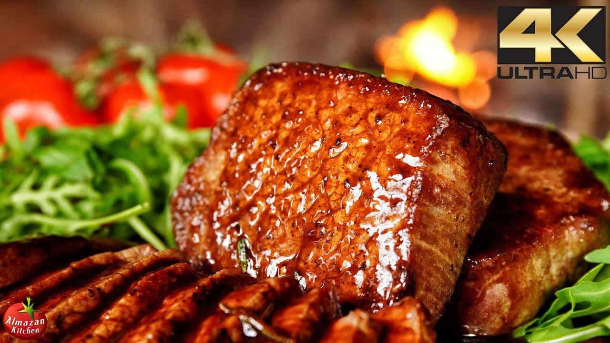
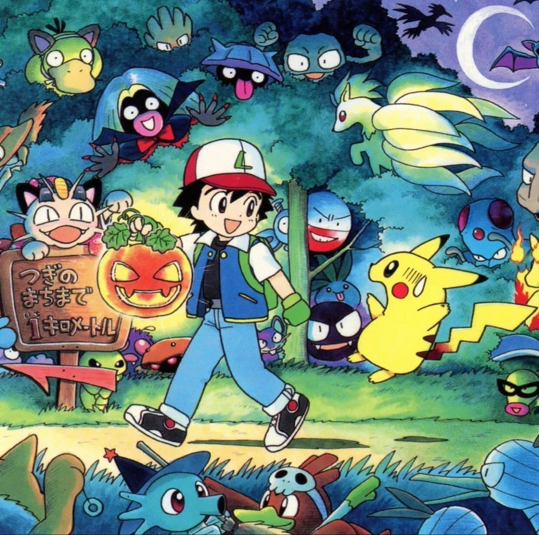
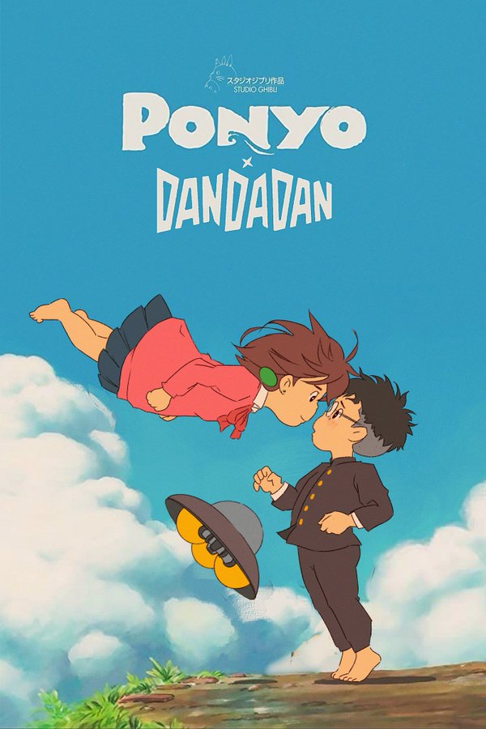
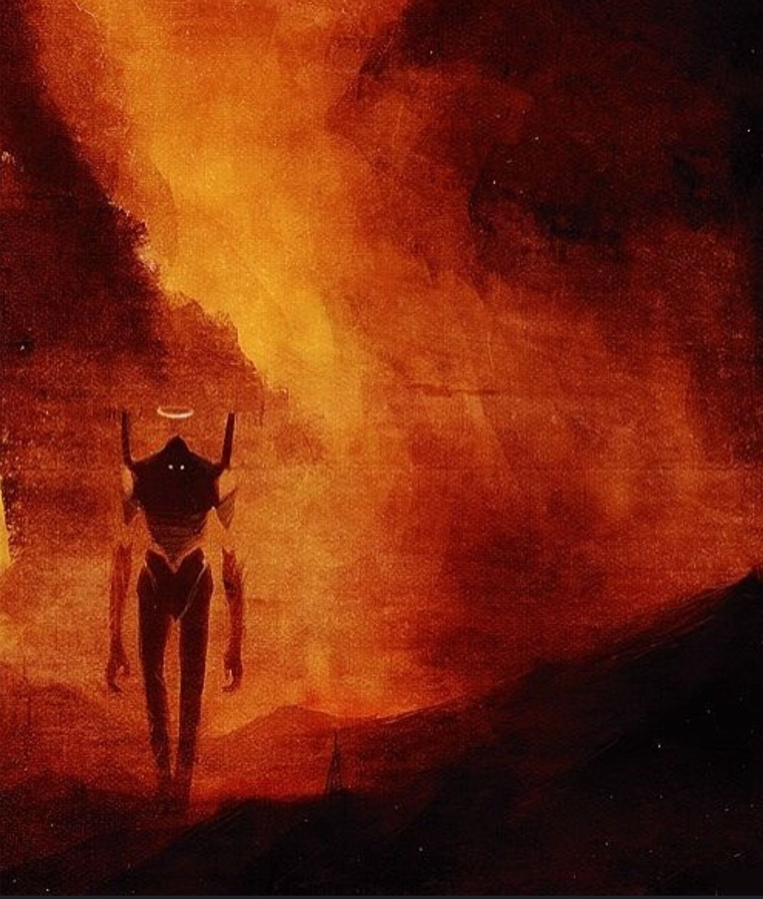

It was a good idea. At least, they all thought it was a good idea at the time. Hindsight would reveal that in reality, it was an unbelievably terrible idea, but it would take another week for them to understand that.
He couldn't move. His head throbbed and spun. He couldn't decide if it was the flu or the drinking last night. It was probably a combination of both.
What have you noticed today? I noticed that if you outline the eyes, nose, and mouth on your face with your finger, you make an "I".
I've rented a car in Las Vegas and have reserved a hotel in Twentynine Palms which is just north of Joshua Tree.
This is a video of their celebration